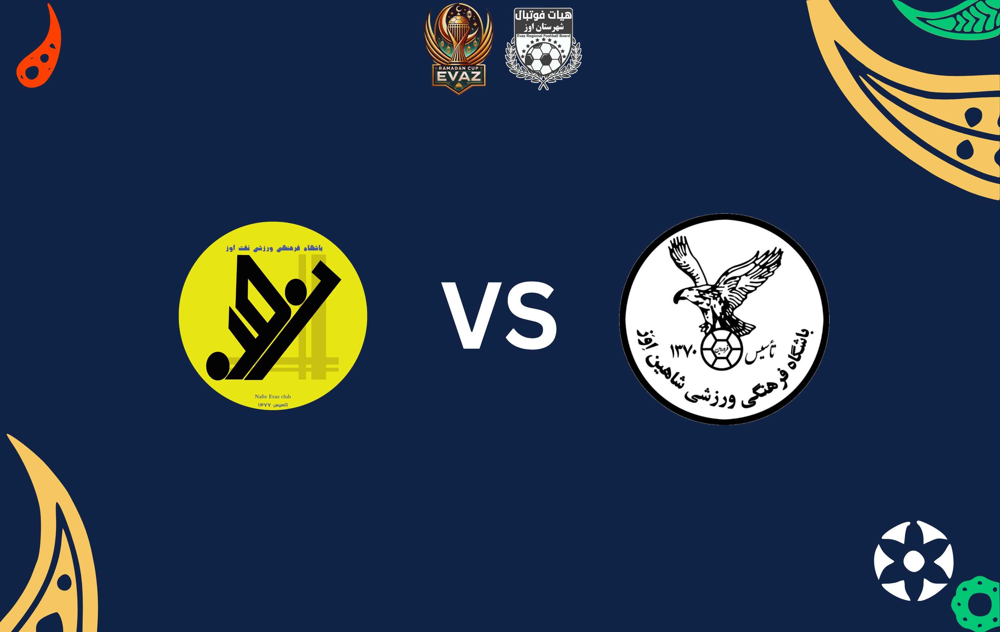

شاهین اوز vs جوانان نفت اوز
گروه A - یکشنبه 12 اسفند 1403 - ساعت 21:30
بازی شماره 1 - گروه A
مکان: سالن ورزشی سرپوشیده میراحمدی اوز
این دیدار آغازگر مسابقات شب نخست است و هر دو تیم برای کسب اولین امتیاز تلاش خواهند کرد.
وحدت کوره vs سده
گروه A - یکشنبه 12 اسفند 1403 - ساعت 22:45
بازی شماره 2 - گروه A
مکان: سالن ورزشی سرپوشیده میراحمدی اوز
دومین مسابقه شب اول، میتواند نقش مهمی در تعیین جایگاه ابتدایی گروه A داشته باشد.

شاهین فیشور vs گراش جوان
گروه A - دوشنبه 13 اسفند 1403 - ساعت 21:30
بازی شماره 3 - گروه A
مکان: سالن ورزشی سرپوشیده میراحمدی اوز
در شب دوم، شاهین فیشور و گراش جوان رودررو میشوند تا برای صعود از گروه A امتیاز جمع کنند.

نیکپا vs شمس اوز
گروه B - دوشنبه 13 اسفند 1403 - ساعت 22:45
بازی شماره 4 - گروه B
مکان: سالن ورزشی سرپوشیده میراحمدی اوز
اولین مسابقه گروه B در این دوره؛ هر دو تیم برای نمایش تواناییهای خود آمادهاند.
شهید پالاهنگ دیدهبان vs شهید قاسمی باغان
گروه B - سهشنبه 14 اسفند 1403 - ساعت 21:30
بازی شماره 5 - گروه B
مکان: سالن ورزشی سرپوشیده میراحمدی اوز
آغاز شب سوم برای گروه B؛ نتیجه این دیدار در جایگاه تیمها تأثیرگذار خواهد بود.
نفت اوز vs شهید احراری باغان
گروه B - سهشنبه 14 اسفند 1403 - ساعت 22:45
بازی شماره 6 - گروه B
مکان: سالن ورزشی سرپوشیده میراحمدی اوز
این بازی میتواند رقابت در گروه B را داغتر کند و تیمها برای صعود، نیازمند امتیاز هستند.

جوانان نفت اوز vs جوانان سده
گروه A - چهارشنبه 15 اسفند 1403 - ساعت 21:30
بازی شماره 7 - گروه A
مکان: سالن ورزشی سرپوشیده میراحمدی اوز
در شب چهارم، این مسابقه نقش مهمی در تعیین تیمهای صعودکننده از گروه A خواهد داشت.

شاهین اوز vs شاهین فیشور
گروه A - چهارشنبه 15 اسفند 1403 - ساعت 22:45
بازی شماره 8 - گروه A
مکان: سالن ورزشی سرپوشیده میراحمدی اوز
آخرین مسابقه دور مقدماتی در گروه A؛ این دیدار میتواند سرنوشت تیمهای صعودکننده را مشخص کند.